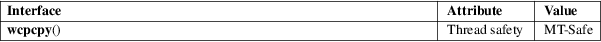

wcpcpy − copy a wide-character string, returning a pointer to its end
Standard C library (libc, −lc)
#include <wchar.h>
wchar_t *wcpcpy(wchar_t *restrict dest, const wchar_t *restrict src);
Feature Test Macro Requirements for glibc (see feature_test_macros(7)):
wcpcpy():
Since glibc 2.10:
_POSIX_C_SOURCE >= 200809L
Before glibc 2.10:
_GNU_SOURCE
The wcpcpy() function is the wide-character equivalent of the stpcpy(3) function. It copies the wide-character string pointed to by src, including the terminating null wide character (L'\0'), to the array pointed to by dest.
The strings may not overlap.
The programmer must ensure that there is room for at least wcslen(src)+1 wide characters at dest.
wcpcpy() returns a pointer to the end of the wide-character string dest, that is, a pointer to the terminating null wide character.
For an explanation of the terms used in this section, see attributes(7).

POSIX.1-2008.
strcpy(3), wcscpy(3)